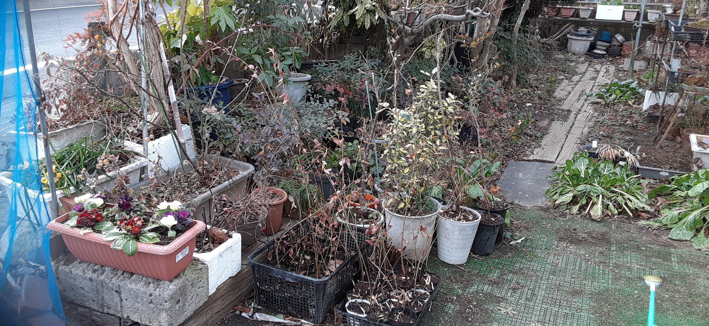

自分の手で、暮らしを育てる。
「KITCHEN GARDEN」は、ささやかな自給自足の楽しみを分かち合う場所として始まりました。
かつて海外の農村で過ごした日々の中で、ものを大切に使い、自分の食べるものを育て、生活を自分の手で整えることの豊かさを学びました。
現在は自身の土地で野菜や苗木を育てながら、福祉の現場にも身を置いています。
名前の由来
「銀七（ぎんしち）」は、私の祖父の名前です。看板にその名を残すことで、かつてこの地に暮らし、共に歩んだ人々の息遣いや共有の思い出を未来へ繋いでいきたいと願っています。
「銀七（ぎんしち）」は、私の祖父の名前です。看板にその名を残すことで、かつてこの地に暮らし、共に歩んだ人々の息遣いや共有の思い出を未来へ繋いでいきたいと願っています。
お手伝いできること
草花・バラの管理と造園
造園技能士1級
長年培ってきた経験をもとに、バラや季節の草花の丁寧な手入れ、お庭の景観を整えるお手伝いをいたします。

造園技能士1級
長年培ってきた経験をもとに、バラや季節の草花の丁寧な手入れ、お庭の景観を整えるお手伝いをいたします。
樹木の健康相談・治療
樹木医
庭木の元気がなくなってしまった時など、一本一株の命に向き合い、適切な処置やアドバイスを行います。
樹木医
庭木の元気がなくなってしまった時など、一本一株の命に向き合い、適切な処置やアドバイスを行います。
野菜苗・苗木の生産販売
家庭菜園から始められる野菜苗や、この土地に馴染む苗木をじっくりと育てて販売しています。
家庭菜園から始められる野菜苗や、この土地に馴染む苗木をじっくりと育てて販売しています。
KITCHEN GARDEN 店主
KOICHI SATO
お問い合わせ
庭木や草花のご相談、苗木についてはメールでお気軽にお声がけください。
メールを送るEmail: kitchengarden.gin7@gmail.com